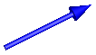

SignalArrowVisualizing an arrow with dynamically varying size in frame_a based on input signal |
Information
This information is part of the Modelica Standard Library maintained by the Modelica Association.
Model SignalArrow defines an arrow that is dynamically visualized
at the location where its frame_a is attached. The
position vector from the tail to the head of the arrow,
resolved in frame_a, is defined via the signal vector of
the connector r_head (Real r_head[3]):

The tail of the arrow is defined with parameter r_tail with respect to frame_a (vector from the origin of frame_a to the arrow tail).
Parameters (1)
| animation |
Value: true Type: Boolean Description: = true, if animation shall be enabled |
|---|
Inputs (4)
| r_tail |
Default Value: {0, 0, 0} Type: Position[3] (m) Description: Vector from frame_a to arrow tail, resolved in frame_a |
|---|---|
| diameter |
Default Value: world.defaultArrowDiameter Type: Diameter (m) Description: Diameter of arrow line |
| color |
Default Value: {0, 0, 255} Type: Color Description: Color of arrow |
| specularCoefficient |
Default Value: world.defaultSpecularCoefficient Type: SpecularCoefficient Description: Reflection of ambient light (= 0: light is completely absorbed) |
Connectors (2)
| frame_a |
Type: Frame_a Description: Coordinate system in which visualization data is resolved |
|
|---|---|---|
| r_head |
Type: RealInput[3] Description: Position vector from origin of frame_a to head of arrow, resolved in frame_a |
Components (2)
Used in Components (1)
|
Modelica.Mechanics.MultiBody.Joints Free motion joint with scalar initialization and state selection (6 degrees-of-freedom, 12 potential states) |